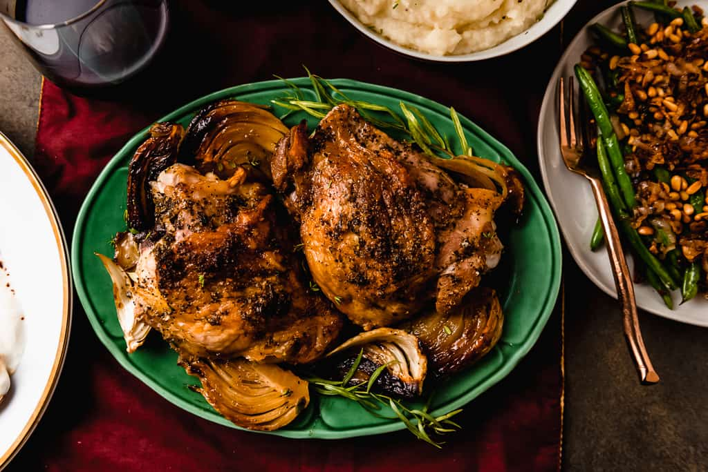

Herb-Roasted Turkey Thighs

Description
Oven-roasted turkey thighs are the way to go if you are having a smaller
Thanksgiving this year.
Ingredients
- ½ cup salted butter, at room temperature
- 2 teaspoons dried thyme
- 2 teaspoons dried rosemary
- 2 teaspoons dried parsley
- 2 teaspoons garlic powder
- 1 teaspoon cayenne pepper
- salt and ground black pepper to taste
- 1 pound baby potatoes
- 2 large onions, roughly chopped
- 8 cloves garlic, minced
- 2 tablespoons olive oil
- 4 turkey thighs
- 1 medium lemon, zested and juiced
Steps
- Preheat the oven to 425 degrees F (220 degrees C).
-
Stir together butter, thyme, rosemary, parsley, garlic powder, cayenne
pepper, salt, and black pepper in a small bowl. Set herb butter aside.
-
Place potatoes, onions, and garlic on a baking sheet. Drizzle with olive
oil; season with salt and pepper.
-
Pat dry turkey thighs with a paper towel; season with salt and pepper.
Lay turkey thighs over vegetables on the baking sheet. Rub herb butter
under turkey skin and over meat. Top with lemon zest and juice.
-
Bake in the preheated oven for 30 minutes. Baste turkey with sheet
juices and continue baking, basting turkey every 15 minutes, until
thighs are no longer pink in the centers, about 30 minutes more. An
instant-read thermometer inserted near the bone should read at least 165
degrees F (74 degrees C).